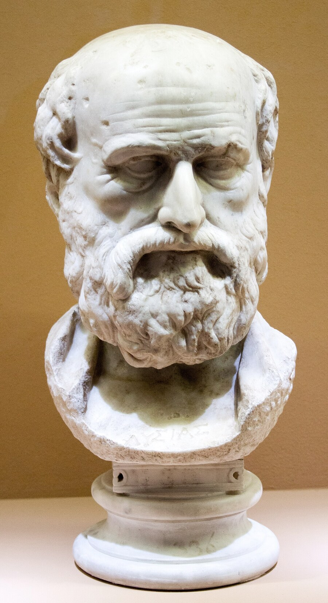

Attische redenaar · ca. 445 – 380 v. Chr.
LysiasΛυσίας
Griekse teksten van Lysias, met woordverklaring, morphologie en grammatica via Alpheios. Lees de redevoeringen, klik op een woord en zie wat het doet.
Naar de teksten
Attische redenaar · ca. 445 – 380 v. Chr.
Griekse teksten van Lysias, met woordverklaring, morphologie en grammatica via Alpheios. Lees de redevoeringen, klik op een woord en zie wat het doet.
Naar de teksten